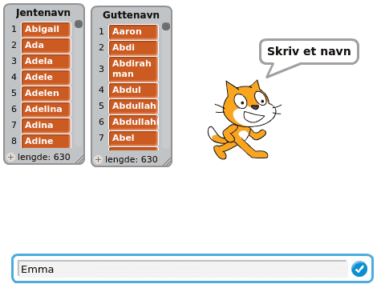
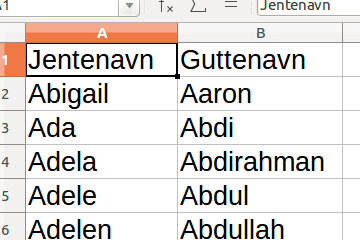
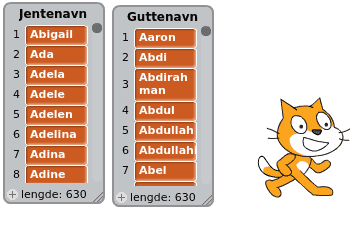

Vi skal her se hvordan vi kan bruke navnelister fra
Statistisk Sentralbyrå i Scratch. Kanskje katten
klarer å finne forskjellen på jente- og guttenavn?

Steg 1: Statistisk Sentralbyrås navnelister
La oss se litt på navnelistene til Statistisk Sentralbyrå. Disse viser hvor
mange i Norge som får hvilke navn, både i dag og tidligere.
Sjekkliste
Prøv også andre navn: Her er en liten utfordring; Se på grafen over
historisk utvikling for navnet Sonja. Det har to veldig tydelige topper,
en på 1920-tallet og en til på 1960-tallet. Kan du forklare dette?
Vi er her bare interessert i selve navnelistene, ikke alle tallene som sier
noe om hvor mange som fikk hvert navn. Du kan derfor slette alle kolonnene
som inneholder tall.

Steg 2: Hent navnelistene inn i Scratch
Vi kan nå lese navnelistene inn i Scratch.
Sjekkliste

Data i Scratch
Vanligvis må man skrive inn alle dataene i lister selv, om man vil bruke dem i
Scratch. Ved hjelp av dataverktøyet kan du lese inn
kjempemasse data som du eller noen andre allerede har laget.
Har du noen ideer til andre data du vil lese inn på samme måte?
Steg 3: Bruk navnelistene
Vi skal nå skrive et lite program som bruker navnelistene. Kanskje vi kan få
katten vår til å se forskjellen på jente- og guttenavn?
Sjekkliste
spør [skriv et navn] og vent
sett [Navn v] til (svar)
spør [skriv et navn] og vent
sett [Navn v] til (svar)
hvis <[Jentenavn v] inneholder (Navn)?>
si (sett sammen (Navn) [ er et jentenavn]) i (2) sekunder
slutt
Test prosjektet
Klikk på koden din.
Sjekkliste
Prøv selv
Forbedre denne siden
Funnet en feil? Kunne noe vært bedre? Hvis ja, vennligst gi oss tilbakemelding ved å lage en sak på Github eller fiks feilen selv om du kan. Vi er takknemlige for enhver tilbakemelding!